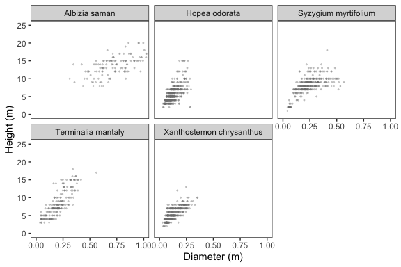
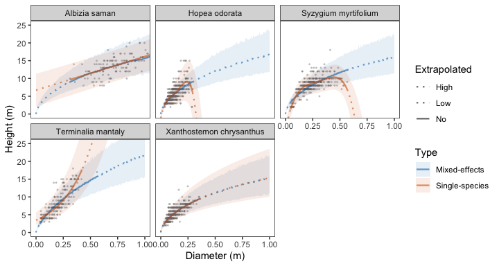

Develop and use allometric equations relating to the size and structure of urban trees. Refer to package website and prototype web app for demonstrations of how the package may be used. The package supplements the following study:
Song, X. P., Lai, H. R., Wijedasa, L. S., Tan, P. Y., Richards, D. R., Height–diameter allometry for the management of city trees in the tropics (in prep).
Installation
# Install development version from GitHub devtools::install_github("xp-song/allometree")
Setup
library(allometree)
Example
Allometric equations in this package have been used to predict relationships between parameters related tree size and structure, such as age, height, trunk diameter, crown height, crown diameter, leaf area, etc. They are foundational to other models that estimate the benefits and hazards associated with trees as they mature and grow in size. See the vignette ‘Get started with allometree’ for a full description of example datasets and allometric equations.
Let’s develop models to predict tree height from trunk diameter for five species in our example dataset data(urbantrees):

One method is to develop allometric models separately for each species, i.e., single-species linear models. We can select the best-fit equation for each species in the dataset, or fit data to specified (i.e. pre-defined) equations, for example, after the removal of outliers. The example below selects the best-fit equation for each species in urbantrees:
results <- sp_modelselect_multi(urbantrees, species = "species", # specify colname of species response = "height", predictor = "diameter") # specify colnames of variables
We can simulate data across a range of diameter sizes for each species, and use their respective models to make predictions of tree height. The simulated data can also be extrapolated beyond the range used to fit the model:
predictions <- sp_simulate(ref_table = results$sp_models_info, models = results$sp_models, extrapolate = c(0,1)) # diameter from 0 to 1 m
Model predictions can be visualised alongside the original data using ggplot2::ggplot():

These allometric relationships can then be interpreted in conjunction with information on the biology and growth (e.g. environmental and management) conditions associated with the trees.